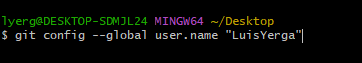
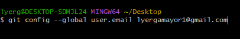
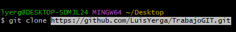
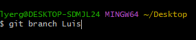
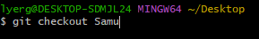
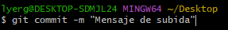
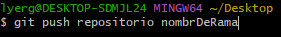
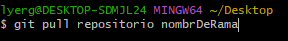

¿Que es git?
Git es un sistema de control de versiones distribuido, lo que significa que un clon local del proyecto es un repositorio de control de versiones completo.
Este paradigma es distinto del control de versiones centralizado, donde los clientes deben sincronizar el código con un servidor antes de crear nuevas versiones
La flexibilidad y popularidad de Git hacen que sea una excelente opción para cualquier equipo. Muchos desarrolladores y graduados universitarios ya saben cómo usar Git.
La comunidad de usuarios de Git ha creado recursos para entrenar a desarrolladores y la popularidad de Git facilita la ayuda cuando sea necesario.
Casi todos los entornos de desarrollo tienen compatibilidad con Git y las herramientas de línea de comandos de Git implementadas en cada sistema operativo principal.
Casi todos los entornos de desarrollo tienen compatibilidad con Git y las herramientas de línea de comandos de Git implementadas en cada sistema operativo principal.Comandos Vitales
"Git Config:"
 Utilizamos estos comandos para configurar nuestra sesión de Git desde la consola. Enlazamos así nuestra cuenta introduciendo nuestro nombre de cuenta y el correo
"Git Clone:"
Clonar un repositorio nos sirve para trabajar de manera local con la información ya subida. Una vez realizados los cambios podemos subir estos a nuestro repositorio de Git
"Git Branch:"
Creamos ramas con el contenido de la rama main para que este pueda ser manipulado por los colaboradores sin que cause conflicto
"Git checkout:"
Es el comando que empleamos para poder movernos entre las distintas ramas del repositoro
"Git commit:"
Hacemos un commit añadiendo un comentario para guardar los distintos cambios que se han hecho. Se controla de esta forma las diferentes versiones por las que ha pasado el proyecto
"Git push:"
Subimos los diferentes commits sobre los que se ha trabajado al repositorio de GitHub.
"Git pull:"
Este comando nos sirve para bajar la ultima version de GitHub a nuestro respositorio local, actualizandose así nuestros documentos
Curiosidades
Git fue lanzado el 7 de abril de 2005 siendo desarrollado por Linus Torvalds, creador de Linux. Es actualmente propiedad de Microsoft desde 2018 en una compra que llego a los 7500 millones de dolares
La creación de Git se da debido a la necesidad de los programadores de Linux de tener una herramienta optima para el control de versiones. En un comienzo estos usaban BitKeeper, pero tras perder el acceso gratuito a esta por problemas con la empresa y sus restricciones se vieron obligados a crear su propio programa con los conocimientos adquiridos de BitKeeper
Siendo Git una herramienta tan vital en el desarrollo y GitHub la página más usada para alojar este tipo de proyectos que utilizan un control de versiones, se obtienen datos tales como:
En 2022 se subieron a GitHub más de 413 millones de contribuciones de código abierto a la página
Una cantidad estimada de 100 millones de programadores activos usando GitHub
Soporte para más de 500 lenguajes los cuales fueron utilizados en los distintos proyectos. JavaScript destaca como el más usado